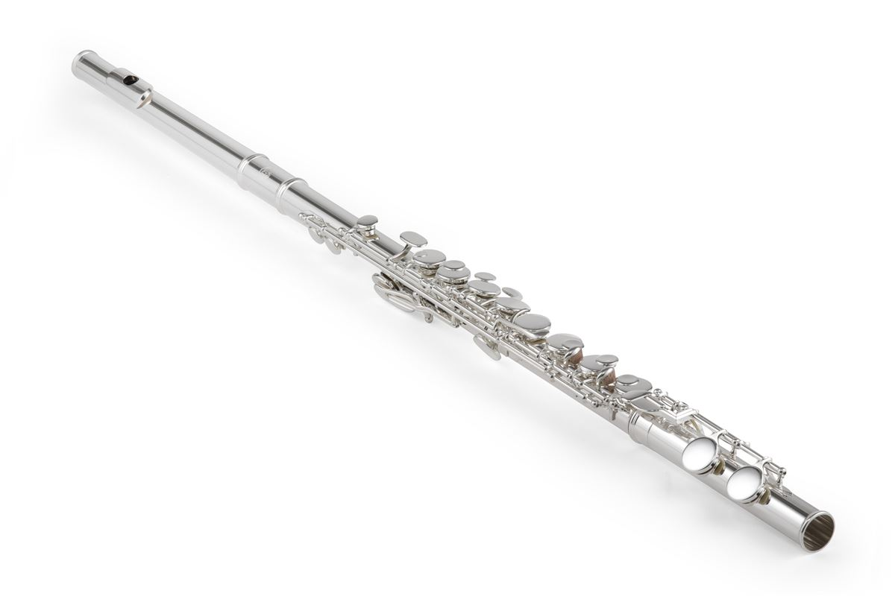

Table of Contents
When it comes to my hobbies the two things that come to my mind are anime and playing instruments which fall under shows and instruments, respectively. Although I do have some other hobbies, these two are the activities I do the most in my free time. Before scrolling down note that to jump to each category click the link in the table of contents.
INSTRUMENTS
Music is definitely something I value a lot as it always calms me down and sometimes even helps to lift off some stress on my shoulders. Since I enjoy music so much, it was only natural that I tried to learn a bunch of instruments such as the flute, saxophone and trumpet.
The first instrument I learned was actually the recorder back in grade 5, and then when I got to to grade 6 I started playing the alto saxophone. It was only in grade 7 when I learning how to play the flute, my favourite instrument, and I've been playing it ever since. I also was able to learn a bit on how to play trumpet in grade 8. Currently, I'm interested in learning how to play the guitar and I am looking at some guitar pieces as well.
I attended band in both grade 7 and 8, playing the flute for both those years in band. Besides playing instruments I also attended choir for 4 years although that was back in elementary school. Once my choir even sang the Canada's national anthem at a Blue Jays game.
Overall, both clubs were very nice experiences and I'm hoping to join band at VPCI too, if coronavirus settles down.
SHOWS
Watching shows is probably what I do most of the time, with the exceptions of sleeping and eating. The majority of the shows I watch are anime and I tend to have a bad habit of binge watching anime in a few days. One of my favourite animes is Boku No Hero Academia or My Hero Academia, and you can click here to understand the basic plot of the show. The fight scenes in this anime are really cool and most of the characters in My Hero Academia are really likeable especially the character in the image below!!
Another anime I really like is Bungou Stray Dogs, it's overall plot is pretty good and the backgrounds are really well-drawn and animated. There are only around 40 episodes so if you ever need a show to watch I recommend you watch Bungou Stray Dogs.
Here is a list of some my favourite shows:
- Boku No Hero Academia
- Bungou Stray Dogs
- Fruits Basket
- Naruto
- Haikyuu
- Voltron
OTHER HOBBIES
Another hobby of mine is reading manga and webtoons, and I usually read the genres: sports, school life and fantasy. Blue Lock is a sports manga that I've recently read with it being one of my favourites and Who Made Me A Princess is a webtoon which I throughly enjoyed reading and it has such beautiful art.

Jump to the Top